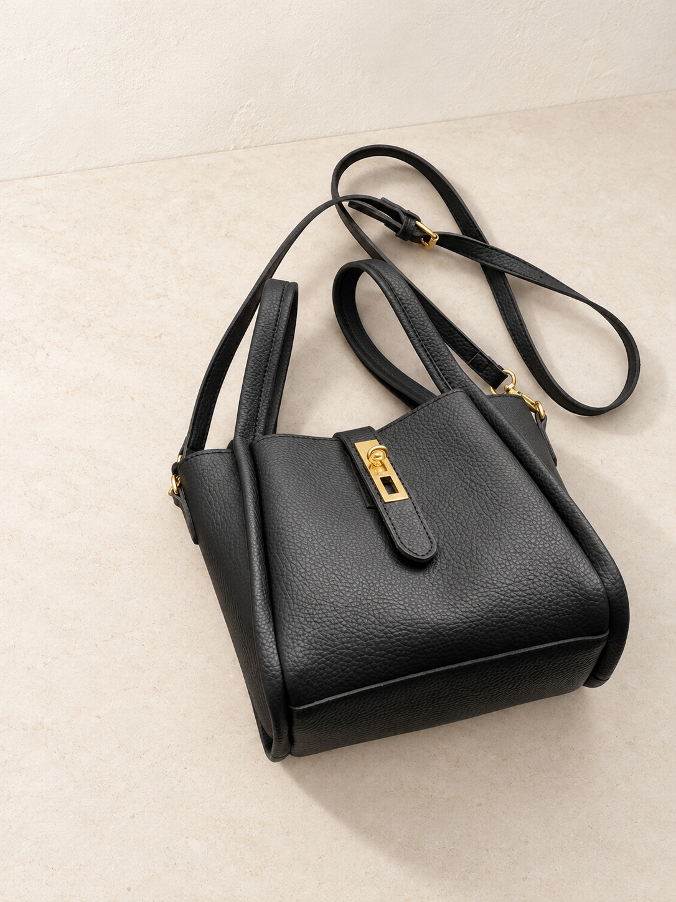

Excluded from upload
Leather/PU material conflict and unclear mother-child set contents.

Black
Compare with the original photo
Check the silhouette, color, grain, stitching, strap attachments and hardware against the source before approval.

Remy everyday bag
$59.00 USD
Retail price · reviewed under your delegated approval
Remy pairs stitched detailing with a simple everyday silhouette. Its clasp detail and internal compartments keep the design practical, with dedicated places for a phone, cards and smaller items.
- Stitched exterior detailing
- Clasp detail
- Internal phone, card and zippered pockets
Materials
PU with nylon lining.
5 new product photos · source data and CJ references preserved.
Review notes
- Material conflict: structured field says Leather while description says PU. Proposed copy uses PU.
- Supplier packing list describes a mother-child set; confirm exactly what is included before publication.
- Translated color descriptions are inconsistent; native variant labels are preserved.
- Care instructions, product dimensions still require confirmation. No unverified values have been inserted.
- Generated photos remain candidates. Compare each with its source before approving it.
Variants, supplier costs and proposed retail prices
All amounts below are USD. Supplier costs exclude shipping and other business costs; proposed retail prices are not approved.
| Original variant | CJ SKU | Supplier cost | Proposed retail |
|---|---|---|---|
| Black | CJYD223642601AZ | $5.31 | $59.00 |
| Gray | CJYD223642602BY | $5.31 | $59.00 |
| Brown | CJYD223642603CX | $5.31 | $59.00 |
| Beige | CJYD223642604DW | $5.31 | $59.00 |
| Coffee | CJYD223642605EV | $5.31 | $59.00 |
SEO and product organization
SEO title: Remy everyday bag | Atelier Veyne
Meta description: Remy everyday bag. Stitched exterior detailing. Clasp detail. Discover considered everyday bags at Atelier Veyne.
Proposed collection: Crossbody bags
Tags: crossbody-bag, cj-import, black, gray, brown, beige, coffee
Live Shopify IDs, swatches, duplicate checks and fulfillment links are still unverified.